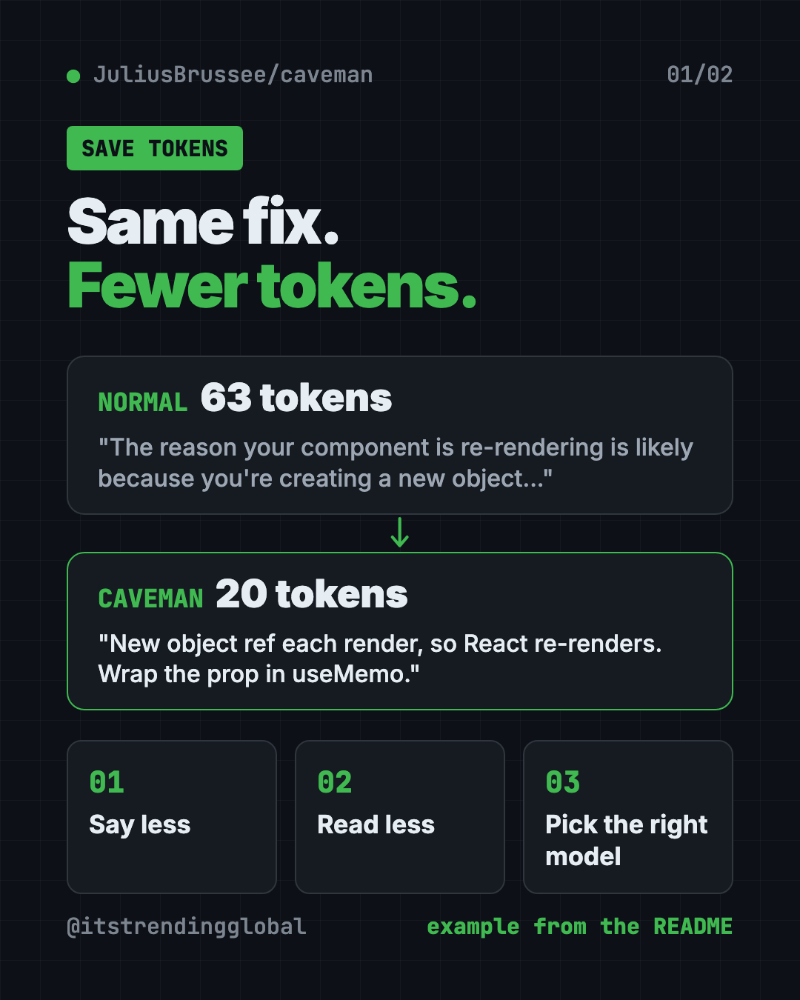
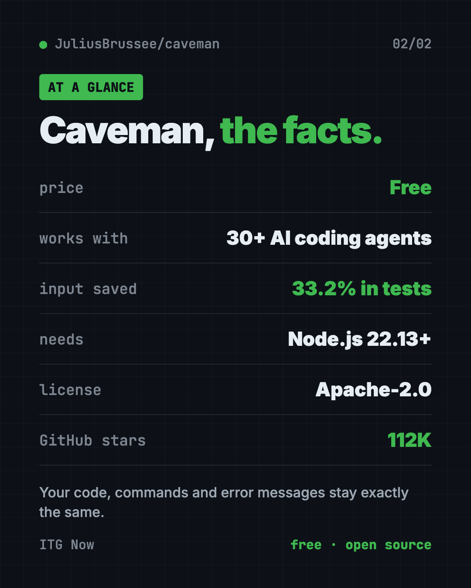

Caveman: Reduce Claude Code Token Usage for Free (2026)
- Free AI tools
- Published 2026-10-15
- 8 min read
- Updated 2026-10-16
- Stars 112K
- License Apache-2.0
- By the It's Trending Global team
Caveman is a free add-on to reduce Claude Code token usage. Your AI helper gives short answers and reads less noise, so each session costs less.
Want to reduce Claude Code token usage without losing good answers? Caveman is a free add-on that makes your AI coding helper talk short, read less junk, and still fix the bug.
It started as a joke in April 2026 and now has about 112K stars on GitHub. Its motto: "why many token when few do trick."
Key takeaways
- Free and open source under the Apache-2.0 license. One install command.
- Short answers, same code. The README shows one fix shrinking from 63 tokens to 20. Code, commands and error messages stay exactly as they were.
- Reads less, too. It shrinks logs, data files and test results before the AI reads them. The README reports 33.2% fewer input tokens across its test sessions.
- Works with 30+ coding agents, including Claude Code, Codex, Gemini CLI and OpenCode.
- Honest numbers. The README lists where Caveman loses, not just where it wins.
What is Caveman?
AI tools bill by "tokens." A token is a small chunk of text, roughly part of a word. Every word your AI reads or writes costs a little money and fills up its short-term memory.
Coding helpers love to chat. Ask why a button keeps redrawing and you get a whole paragraph. You needed one line.
Caveman fixes that. It gives your AI a new voice: answer first, one idea per sentence, no greetings, no recap. The README says the rules borrow from the plain English used in aircraft repair manuals.
Small words like "the" can go. Words like "not," "never" and "only" never go. Numbers stay exact. And for security warnings or risky actions, it switches back to full sentences on purpose.
How Caveman cuts your token bill
Since version 4.0, Caveman comes in six parts. The README calls them "rocks." All six switch on after install, and each has its own off switch.
- Say less. Short, clear answers from your AI.
- Read less. Big logs, spreadsheets (CSV) and test output get squeezed before the AI sees them. Your original files stay on your disk.
- Auto. Picks which AI model and how much effort to use for each question. Hard question, big model. Easy one, cheaper model. This part needs a free Caveman account.
- Blocks. Saves small helper scripts your AI writes, so it can reuse them. Still a pre-release.
- Waste fixes. Shows where your tokens go and suggests fixes. It only applies them when you say yes.
- Browse. Sends web pages to the AI in a much smaller form.

You can also pick how short it gets. /caveman is the normal mode. /ultracave is even shorter. /megacave answers in classical Chinese, which the README shows as the shortest of all.
How to use Caveman (real examples)
- Fix a bug faster. Ask why your page keeps reloading. You get the cause and the fix in two lines, not a lecture.
- Read a giant error log. Point your AI at a long log file. Caveman shrinks it first, so the AI spends tokens on the answer instead of the noise.
- Check a big spreadsheet. A CSV with thousands of rows gets squeezed before the AI reads it. The README's CSV test file went from 28,041 tokens to 314.
- Write commit notes. Type
/caveman-commitand get a one-line summary of your change. - Review code.
/caveman-reviewgives one finding per line, so you can scan the list in seconds.
💡 Tip: Type
/caveman-statsinside Claude Code to see your real token use for that session. It is the easiest way to check whether Caveman helps your work.
Is Caveman free?
Yes. The tool is free and open source under Apache-2.0. You can use it at work, change it and share it.
Your AI provider still bills you as usual. Caveman only helps you use fewer tokens. The "Auto" part needs a free account. There is also a separate Caveman Cloud service for teams who build their own AI agents.
Does it really save money?
Often, but not always. The README is open about the limits, which we like.
- "Be concise" already helps. On ten test questions, asking the AI to "answer concisely" cut output a lot. Normal
/cavemansaved 3% more on top of that./ultracavesaved 35% more. - Per-request plans save nothing. If you pay per request, like GitHub Copilot, shorter answers do not lower your bill.
- Web pages saved as HTML have no shrinker yet, so that test came out 9.9% worse.
Outside groups have tested it too. The README links a JetBrains test of 86 coding tasks that found no measurable drop in quality. It also links an Adobe Research paper that cites the project.
⚠️ Heads up: The command-line tool sends usage stats by default, like commands run and token counts. The README says it never sends your prompts, code or file paths. Type
caveman telemetry offto stop it.
Caveman at a glance
| Price | Free (your AI provider still bills you) |
| Works offline | No, it sits on top of online AI tools |
| Platforms | Mac, Windows, Linux |
| Works with | Claude Code, Codex, Gemini CLI, OpenCode and 30+ more |
| License | Apache-2.0 (open source) |
| Needs | Node.js 22.13 or newer |
| Best for | Anyone who codes with AI every day and wants smaller bills |

How to install Caveman
You need Node.js 22.13 or newer. Node.js is a free program you can download from nodejs.org. You also need an AI coding tool like Claude Code.
Open Terminal (Mac or Linux) or PowerShell (Windows). Copy and paste this:
npx @caveman-ai/cli@latest
Caveman finds your AI tools and shows what it will change. Press Enter. That's it. After that, plain claude runs in caveman mode, and so do Codex, Gemini CLI and OpenCode.
Only want the shorter answers, without the rest? Copy and paste this:
npx skills add JuliusBrussee/caveman -g
Already inside Claude Code? Type these where you talk to Claude:
/plugin marketplace add JuliusBrussee/caveman
/plugin install caveman@caveman
Useful commands after install:
caveman status
caveman telemetry off
The first shows which parts are on. The second turns off usage stats. To go back to normal answers in a chat, just say "stop caveman."
💡 Tip: Had Caveman before version 4.0? The README says to keep
@latestin the install command, or your old copy wins.
Let Claude or Codex set it up for you
Claude Code and OpenAI Codex are AI helpers that run setup steps on your computer. You paste a request, and you approve each step.
Copy and paste this:
Please help me install Caveman from github.com/JuliusBrussee/caveman.
1. Check that I have Node.js 22.13 or newer. If not, help me install it.
2. Run the official install command from the README.
3. Explain each change before you make it.
4. Turn off usage stats with "caveman telemetry off".
5. Show me "caveman status" at the end and explain what is on.
Then try asking:
Use /caveman-stats and tell me how many tokens this session used.
Turn off the Caveman browse part and keep the rest on.
Read the Caveman README and tell me which parts help my kind of work most.
Our take
Caveman is fun, and it is useful. It keeps code exact, it installs with one line, and its README shows the losing numbers next to the winning ones. That honesty is rare.
What we like:
- One command sets up many AI tools at once.
- Code, paths and error messages are never changed.
- Each part has its own off switch.
- Clear privacy notes, with an easy way to stop usage stats.
What to watch for:
- Savings depend on your work. Plain "be concise" already gets you part of the way.
- No help if you pay per request instead of per token.
- Usage stats are on by default.
- Blocks is still a pre-release, and Auto needs an account.
Want more ways to trim your AI bill? See Headroom, which shrinks what your AI has to read, and RTK, a free token saver for coding helpers. If your AI writes too much code instead of too many words, try Ponytail. Caveman also made our top 5 GitHub repos of April 2026.
FAQ
What does Caveman do?
Caveman makes your AI coding helper give short, direct answers and read less noise. That helps reduce Claude Code token usage and saves time reading replies.
Is Caveman free?
Yes. It is free and open source under Apache-2.0. Your AI provider still charges you for the tokens you do use.
Does Caveman change my code?
No. The README says code, commands, file paths and error messages stay exactly the same, character for character.
Which AI tools does Caveman work with?
It works with Claude Code, Codex, Gemini CLI, OpenCode and more than 30 other coding agents.
How do I turn Caveman off?
Say "stop caveman" in a chat to go back to normal answers. Use caveman off browse style commands to switch off one part.
Does Caveman send my data anywhere?
The skill alone sends nothing. The command-line tool sends usage stats, like token counts, by default. Turn that off with caveman telemetry off.
Get Caveman: github.com/JuliusBrussee/caveman
Follow ITG Now on Instagram for one free, useful tool every day.
Keep reading

DBX: Free Database Client for 100+ Databases, With AI (2026)
DBX is a free database client that opens 100+ kinds of databases in a 25 MB app. Its AI helper turns plain English into database queries for you.

PureMac: Free CleanMyMac Alternative, No Subscription
PureMac is a free CleanMyMac alternative. It clears junk, fully uninstalls apps and finds duplicates, with no subscription, no tracking and no scare tactics.

Strata: Run Big Local AI on a Gaming PC, Free
Strata is a free installer that runs big, private local AI on a gaming PC. It sets up a large Qwen model, so your chats never leave your computer.